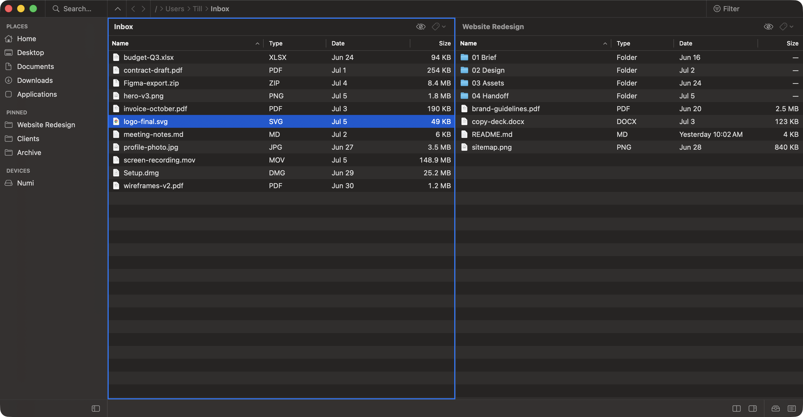

Dual-panel file manager · macOS
Move files at the speed of your keyboard.
The dual-panel macOS file manager Finder never gave you. Two folders side by side, one keystroke to move between them, and everything is undoable. Native, and small: 1.4 MB to download, 5 MB installed.
Apple Silicon & Intel · macOS 13+ · native Swift
Free beta, not yet notarized by Apple.

Two panels, one workspace. Select a file in the left panel, press ⌥⌘→, it lands in the right. No dragging, no new windows.
Why it's different
Every action has a key.
Chorded gestures for power, plus Finder's own conventions for copy, paste, go-to-folder and Quick Look — so your muscle memory just transfers.
Undo anything.
Every move, copy, rename and trash is reversible. Multi-level ⌘Z, with a toast that says exactly what was undone.
Real Finder tags.
Genuine Apple Finder tags that round-trip both ways. Diptychon rides the ecosystem instead of inventing its own.
Every command, one place
Finder conventions where they exist; chords where they earn their keep. Every key is rebindable — nothing to relearn.
Getting it · first launch
The build isn't notarized yet, so macOS Gatekeeper will hold it on first open. This takes ten seconds, once.
- Download the zip and unzip it — Finder does this on double-click. Drag Diptychon to your Applications folder.
- Right-click the app and choose Open — then confirm the dialog. (A plain double-click will be blocked the first time.)
- That's it. Every launch after this one opens normally.
Found a bug?
It's an early beta, so telling me what broke is genuinely the most useful thing you can do. No account, no sign-up — it opens your mail app with the details filled in.
Give your keyboard the file manager.
Apple Silicon & Intel · macOS 13+ · native Swift